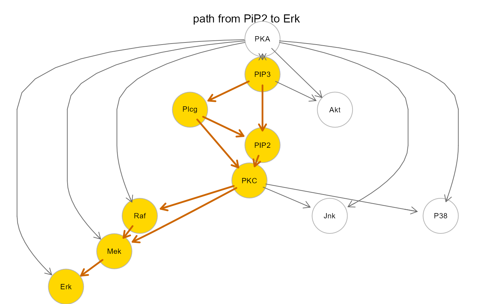
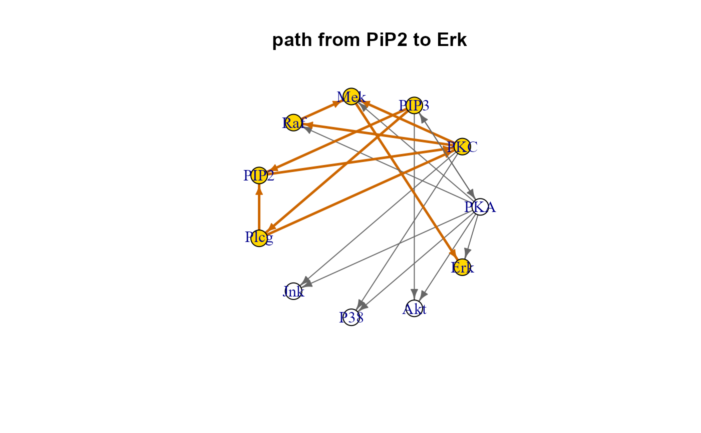

R/semPaths.R
SEMpath.RdFind and fit all directed or shortest paths between two source-sink nodes of a graph.
SEMpath(graph, data, group, from, to, path, verbose = FALSE, ...)An igraph object.
A matrix or data.frame. Rows correspond to subjects, and columns to graph nodes (variables).
A binary vector. This vector must be as long as the
number of subjects. Each vector element must be 1 for cases and 0
for control subjects. If NULL (default), group influence will
not be considered.
Starting node name (i.e., source node).
Ending node name (i.e., sink node).
If path = "directed", all directed paths between
the two nodes will be included in the fitted model.
If path = "shortest", only shortest paths will be returned.
Show the directed (or shortest) path between the given source-sink pair inside the input graph.
Currently ignored.
A list of four objects: a fitted model object of class
lavaan ("fit"), aggregated and node-specific
group effect estimates and P-values ("gest"), the extracted subnetwork
as an igraph object ("graph"), and the input graph with a color
attribute mapping the chosen path ("map").
# Directed path fitting
path <- SEMpath(graph = sachs$graph, data = log(sachs$pkc),
group = sachs$group,
from = "PIP3",
to = "Erk",
path = "directed")
#> DAG conversion : TRUE
#> Path: PIP3 -> Erk size- 7 9 --
#>
#> NLMINB solver ended normally after 1 iterations
#>
#> deviance/df: 0.7197578 srmr: 0.0090136
#>
#> Brown's combined P-value of node activation: 3.154416e-09
#>
#> Brown's combined P-value of node inhibition: 1
#>
# Summaries
summary(path$fit)
#> lavaan 0.6.17 ended normally after 1 iteration
#>
#> Estimator ML
#> Optimization method NLMINB
#> Number of model parameters 23
#>
#> Number of observations 1766
#>
#> Model Test User Model:
#>
#> Test statistic 8.635
#> Degrees of freedom 12
#> P-value (Chi-square) 0.734
#>
#> Parameter Estimates:
#>
#> Standard errors Standard
#> Information Observed
#> Observed information based on Hessian
#>
#> Regressions:
#> Estimate Std.Err z-value P(>|z|)
#> zErk ~
#> group 0.296 0.023 12.661 0.000
#> zMek ~
#> group 0.117 0.020 5.990 0.000
#> zPIP2 ~
#> group 0.110 0.021 5.243 0.000
#> zPIP3 ~
#> group -0.301 0.023 -13.278 0.000
#> zPKC ~
#> group 0.116 0.024 4.818 0.000
#> zPlcg ~
#> group 0.268 0.024 11.359 0.000
#> zRaf ~
#> group -0.464 0.021 -21.883 0.000
#> zErk ~
#> zMek 0.011 0.023 0.487 0.627
#> zMek ~
#> zPKC -0.016 0.017 -0.916 0.360
#> zRaf 0.736 0.019 37.845 0.000
#> zPIP2 ~
#> zPIP3 0.528 0.021 25.141 0.000
#> zPlcg 0.199 0.020 9.762 0.000
#> zPKC ~
#> zPIP2 0.029 0.025 1.163 0.245
#> zPlcg -0.010 0.026 -0.383 0.702
#> zPlcg ~
#> zPIP3 0.288 0.024 12.208 0.000
#> zRaf ~
#> zPKC 0.008 0.021 0.359 0.719
#>
#> Variances:
#> Estimate Std.Err z-value P(>|z|)
#> .zErk 0.913 0.031 29.715 0.000
#> .zMek 0.524 0.018 29.715 0.000
#> .zPIP2 0.653 0.022 29.715 0.000
#> .zPIP3 0.909 0.031 29.715 0.000
#> .zPKC 0.986 0.033 29.715 0.000
#> .zPlcg 0.891 0.030 29.715 0.000
#> .zRaf 0.785 0.026 29.715 0.000
#>
print(path$gest)
#> lhs op rhs est se z pvalue ci.lower ci.upper
#> 1 Erk ~ group 0.296 0.023 12.661 0 0.250 0.341
#> 2 Mek ~ group 0.117 0.020 5.990 0 0.079 0.155
#> 3 PIP2 ~ group 0.110 0.021 5.243 0 0.069 0.150
#> 4 PIP3 ~ group -0.301 0.023 -13.278 0 -0.346 -0.257
#> 5 PKC ~ group 0.116 0.024 4.818 0 0.069 0.163
#> 6 Plcg ~ group 0.268 0.024 11.359 0 0.222 0.314
#> 7 Raf ~ group -0.464 0.021 -21.883 0 -0.506 -0.423
# Graphs
gplot(path$map, main="path from PiP2 to Erk")

plot(path$map, layout=layout.circle, main="path from PiP2 to Erk")
